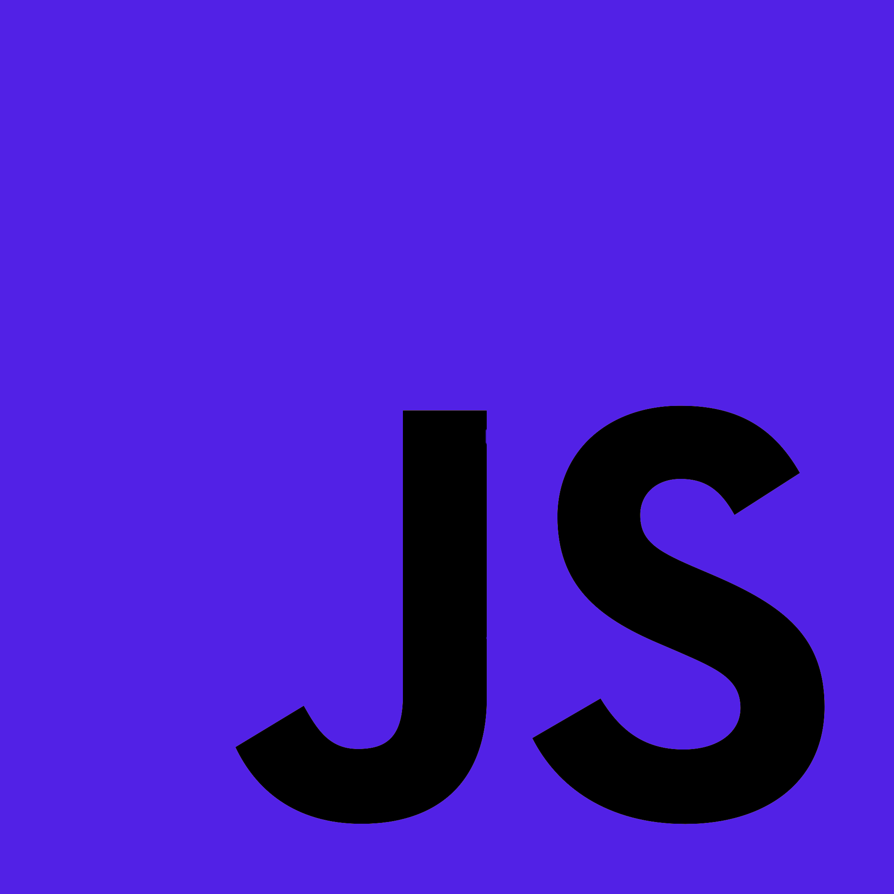
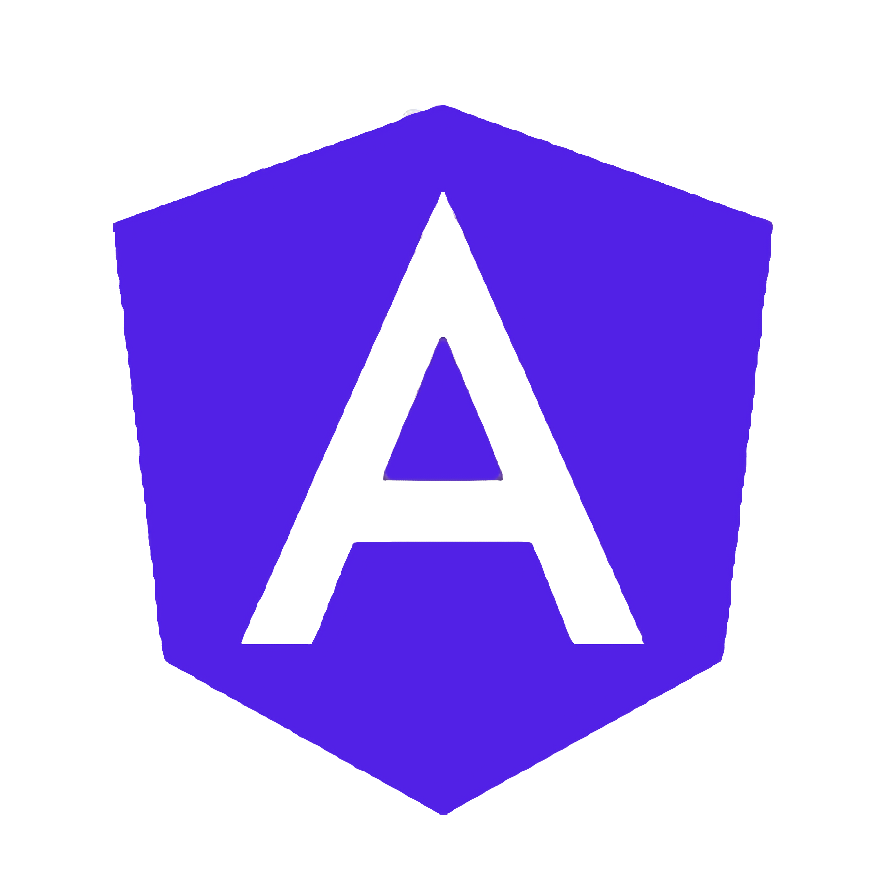

<div class="fourth-section-div" id="fourth-section">
    <div class="fourth-section-inner-div">
        <div class="fourth-section-left">
            <h2 class="fourth-section-header">Skillset</h2>
            <div class="fourth-section-subheader-text">With skills in the most important fields of front-end development, I'm the first person to hire when it comes to a full-fledged front-end project. Whatever your needs are, I can pretty much take on any problem in front-end development.
            </div>
        </div>
        <div class="fourth-section-skill-presentation-div">
            <div class="fourth-section-upper-skills">
                <div class="fourth-section-single-skill" data-aos="flip-up" data-aos-anchor="#example-anchor" data-aos-offset="2500" data-aos-duration="500">
                    <div class="fourth-section-single-skill-img-div"></div>
                    <h3 class="fourth-section-single-skill-header">HTML & CSS</h3>
                    <div class="fourth-section-single-skill-text">Working on projects at the Developer Akademie has taught me about HTML & CSS design and UI/UX Design.
                    </div>
                </div>
                <div class="fourth-section-single-skill" data-aos="flip-up" data-aos-anchor="#example-anchor" data-aos-offset="2600" data-aos-duration="500">
                    <div class="fourth-section-single-skill-img-div"></div>
                    <h3 class="fourth-section-single-skill-header">JavaScript</h3>
                    <div class="fourth-section-single-skill-text">I built a jump&run-game, a full kanban board, clones of Instagram, google photos, and many more and this led to a strong understanding of the whole JavaScript programming language.
                    </div>
                </div>
            </div>
            <div class="fourth-section-lower-skills">
                <div class="fourth-section-single-skill" data-aos="flip-up" data-aos-anchor="#example-anchor" data-aos-offset="2800" data-aos-duration="500">
                    <div class="fourth-section-single-skill-img-div"></div>
                    <h3 class="fourth-section-single-skill-header">Rest API & Databases</h3>
                    <div class="fourth-section-single-skill-text">I started JavaScript development with Rest APIs and continued with Ring of Fire, a game based on Angular and a Firebase database.

                    </div>
                </div>
                <div class="fourth-section-single-skill" data-aos="flip-up" data-aos-anchor="#example-anchor" data-aos-offset="2900" data-aos-duration="500">
                    <div class="fourth-section-single-skill-img-div">
                        
                    </div>
                    <h3 class="fourth-section-single-skill-header">Angular</h3>
                    <div class="fourth-section-single-skill-text">I use Angular as the main framework and I have built a fully functional Slack clone as well as a CRM system.</div>
                </div>
            </div>
        </div>
    </div>
</div>

<!--Projekt Design (HTML/CSS, Product/UX Design), JavaScript, Rest API + Databases, Angular, SCRUM + Git-->